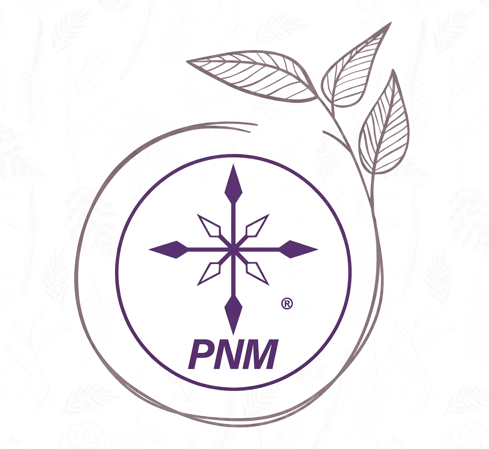

<!DOCTYPE html>
<html lang="es">
<head>
    <meta charset="UTF-8">
    <meta name="viewport" content="width=device-width, initial-scale=1.0">
    <title>PRONAMED | Salud Natural y Herbolaria Clínica</title>
    
    <!-- Librerías de Alto Nivel -->
    <script src="https://cdn.tailwindcss.com"></script>
    <script src="https://unpkg.com/react@18/umd/react.production.min.js"></script>
    <script src="https://unpkg.com/react-dom@18/umd/react-dom.production.min.js"></script>
    <script src="https://unpkg.com/@babel/standalone/babel.min.js"></script>
    <script src="https://unpkg.com/lucide@latest"></script>

    <script>
        tailwind.config = {
            theme: {
                extend: {
                    colors: {
                        pnm: {
                            light: '#F8FAFC', 
                            darkText: '#0F172A', 
                            main: '#1B3C1A', 
                            gold: '#D4AF37', 
                        }
                    },
                    boxShadow: {
                        'premium-light': '0 20px 40px -10px rgba(0, 0, 0, 0.05)',
                        'gold-glow': '0 10px 30px -10px rgba(212, 175, 55, 0.4)',
                    }
                }
            }
        }
    </script>
    <style>
        @import url('https://fonts.googleapis.com/css2?family=Plus+Jakarta+Sans:wght@200;400;600;700;800&display=swap');
        body { font-family: 'Plus Jakarta Sans', sans-serif; background-color: #F8FAFC; color: #0F172A; overflow-x: hidden; }
        
        .no-scrollbar::-webkit-scrollbar { display: none; }

        .shimmer { position: relative; overflow: hidden; }
        .shimmer::after {
            content: ''; position: absolute; top: -50%; left: -50%; width: 200%; height: 200%;
            background: linear-gradient(to bottom right, rgba(255,255,255,0) 0%, rgba(255,255,255,0.4) 50%, rgba(255,255,255,0) 100%);
            transform: rotate(45deg); animation: shimmer 4s infinite;
        }
        @keyframes shimmer { 0% { transform: translateX(-150%) rotate(45deg); } 25%, 100% { transform: translateX(150%) rotate(45deg); } }

        .product-card { transition: all 0.4s ease; background-color: #ffffff; }
        .product-card:hover { transform: translateY(-8px); box-shadow: 0 25px 50px -12px rgba(27, 60, 26, 0.15); }
        
        .modal-panel { animation: slideUp 0.5s cubic-bezier(0.16, 1, 0.3, 1) forwards; }
        @keyframes slideUp { from { transform: translateY(100%); opacity: 0; } to { transform: translateY(0); opacity: 1; } }
    </style>
</head>
<body>
    <div id="root"></div>

    <script type="text/babel">
        const { useState, useEffect } = React;

        const Icon = ({ name, size = 24, className = "" }) => {
            useEffect(() => { if (window.lucide) window.lucide.createIcons(); }, [name]);
            return <i data-lucide={name} style={{width: size, height: size}} className={`shrink-0 ${className}`}></i>;
        };

        function App() {
            const [selectedProduct, setSelectedProduct] = useState(null);
            const [activeTab, setActiveTab] = useState('todos');
            const whatsappNumber = "522281206974";

            const handleWhatsApp = (pName) => {
                const msg = `Hola Pronamed, me interesa recibir información y hacer un pedido de: ${pName}.`;
                window.open(`https://wa.me/${whatsappNumber}?text=${encodeURIComponent(msg)}`, '_blank');
            };

            const products = [
                { n: "Nervilex", f: "nervilex.png", planta: "nervilex-planta.jpg", c: "emocional", tag: "Relajante", sirve: "Regulador del sistema nervioso que ayuda a calmar la ansiedad y el estrés acumulado por el trabajo o problemas diarios.", ciencia: "Los compuestos de la Valeriana interactúan con los receptores GABA del cerebro, que son los encargados de 'frenar' la actividad nerviosa excesiva.", sustancia: "Raíz de Valeriana y Pasiflora", guia: "Tomar 1 cápsula 30 minutos antes de dormir con agua tibia. En momentos de angustia, tomar 1 por la mañana.", tips: ["Evita usar el celular 1 hora antes de dormir.", "Intenta cenar algo ligero.", "Haz ejercicios de respiración (4-7-8)."], bene: ["Dormirás de corrido toda la noche", "Despertar con energía", "Menos irritabilidad"], precaucion: "No combinar con alcohol ni sedantes químicos." },
                { n: "Fytoderm", f: "fytoderm.png", planta: "fytoderm-planta.jpg", c: "piel", tag: "Piel Sana", sirve: "Pomada regeneradora que actúa como 'venda líquida' para sanar heridas, quemaduras y piel muy dañada o irritada.", ciencia: "El Tepezcohuite estimula la mitosis celular, logrando que la piel se cierre rápido, mientras su acción antiséptica evita infecciones.", sustancia: "Tepezcohuite y Caléndula", guia: "Lava la zona afectada, seca sin tallar y aplica una capa generosa de Fytoderm 3 veces al día.", tips: ["Usa ropa de algodón para que la piel respire.", "Aplica fría en caso de quemaduras solares.", "No te rasques la zona en curación."], bene: ["Piel sana en mitad de tiempo", "Quita el ardor al instante", "Evita cicatrices marcadas"], precaucion: "Solo uso externo. Si hay infección severa, consulta al médico." },
                { n: "Aknesin", f: "aknesin.png", planta: "aknesin-planta.jpg", c: "piel", tag: "Anti-Acné", sirve: "Tratamiento natural para secar granitos, controlar la grasa facial y limpiar las impurezas sin resecar tu piel.", ciencia: "El Árbol de Té es un potente bactericida natural que entra en los poros obstruidos para eliminar la bacteria P. acnes.", sustancia: "Árbol de Té y Neem", guia: "Aplica directamente sobre el brote por las noches después de lavar tu rostro con jabón suave.", tips: ["Usa bloqueador solar sin grasa.", "Cambia la funda de tu almohada seguido.", "¡No te pellizques la cara!"], bene: ["Seca los barritos rápido", "Quita el brillo de la cara", "Reduce el enrojecimiento"], precaucion: "Si tienes piel hipersensible, prueba un poco en el cuello primero." },
                { n: "Regena", f: "regena.png", planta: "regena-planta.jpg", c: "piel", tag: "Anti-Edad", sirve: "Crema intensiva para devolverle la firmeza, suavidad y luminosidad a la piel madura o deshidratada.", ciencia: "Aporta nutrientes precursores de elastina y colágeno que rellenan las líneas de expresión desde las capas profundas de la dermis.", sustancia: "Colágeno y Rosa Mosqueta", guia: "Aplica por la mañana y por la noche en rostro, cuello y escote con masajes ascendentes.", tips: ["Toma 2 litros de agua para hidratar desde adentro.", "No olvides el área del cuello al aplicarla."], bene: ["Disminuye arrugas finas", "Piel súper suave", "Tono más parejo"], precaucion: "No aplicar dentro de los ojos." },
                { n: "P-S-S-4", f: "pss4.png", planta: "pss4-planta.jpg", c: "piel", tag: "Descamación", sirve: "Aceite botánico especializado para tratar resequedad extrema, descamación, costras o piel tipo psoriasis.", ciencia: "Restaura la capa lipídica (de grasa natural) de la piel, sellando la humedad y eliminando el picor insoportable.", sustancia: "Mezcla de Aceites Botánicos", guia: "Aplica directamente sobre las placas de piel seca inmediatamente después de bañarte.", tips: ["Sécate a toquecitos, no te talles.", "Evita bañarte con agua muy caliente.", "Usa jabones de avena."], bene: ["Elimina la comezón", "Ablanda costras gruesas", "Hidratación prolongada"], precaucion: "No aplicar sobre heridas abiertas." },
                { n: "Gastrilex", f: "gastrilex.png", planta: "gastrilex-planta.jpg", c: "digestion", tag: "Estómago", sirve: "Protector natural que apaga el 'incendio' en tu estómago causado por la gastritis, acidez y el reflujo.", ciencia: "El Cuachalalate crea una capa viscosa que protege la mucosa del estómago del ácido que producimos, permitiendo sanar úlceras.", sustancia: "Corteza de Cuachalalate y Aloe", guia: "Disolver 20 gotas en medio vaso de agua 15 minutos antes de desayunar, comer y cenar.", tips: ["Evita refrescos negros y café en ayunas.", "Cena 2 horas antes de dormir.", "Mastica despacio."], bene: ["Adiós al reflujo nocturno", "Vientre desinflamado", "Recuperas el placer de comer"], precaucion: "Si el dolor es agudo y vomitas sangre, ve a urgencias médicas." },
                { n: "Endex", f: "endex.png", planta: "endex-planta.jpg", c: "digestion", tag: "Fibras", sirve: "Estimulante del tránsito intestinal para personas que sufren de estreñimiento constante o digestión muy lenta.", ciencia: "Actúa como una escoba natural: la fibra absorbe agua, aumenta el volumen del bolo fecal y facilita su expulsión sin dolor.", sustancia: "Fibra de Lino (Linaza)", guia: "Tomar una cucharada sopera disuelta en un vaso grande de agua por las noches antes de acostarse.", tips: ["Si no tomas agua, la fibra no funciona, bebe mucha.", "Camina 20 minutos diarios."], bene: ["Irás al baño sin esfuerzo", "Adiós a los cólicos por gases", "Vientre plano"], precaucion: "Si tienes oclusión intestinal diagnosticada, no consumir." },
                { n: "Exoral", f: "exoral.png", planta: "exoral-planta.jpg", c: "digestion", tag: "Hígado Sano", sirve: "Limpiador hepático y de vesícula. Ideal si tienes la boca amarga, hígado graso o te caen pesadas las grasas.", ciencia: "El Boldo y la Alcachofa estimulan la producción de bilis, permitiendo digerir grasas rápidamente.", sustancia: "Boldo y Alcachofa", guia: "Tomar 20 gotas en agua 15 minutos antes de la comida más pesada del día.", tips: ["Bájale a las harinas blancas y frituras.", "No bebas alcohol mientras desintoxicas.", "Toma agua con limón."], bene: ["Se quita el sabor amargo", "Digestión rápida sin pesadez", "Limpia tu hígado"], precaucion: "No tomar si tienes piedras grandes en la vesícula obstruidas." },
                { n: "Vesi-ren", f: "vesiren.png", planta: "vesiren-planta.jpg", c: "digestion", tag: "Control Peso", sirve: "Auxiliar natural para acelerar el metabolismo y no acumular tanta grasa de los alimentos.", ciencia: "Reduce los picos de insulina en la sangre después de comer, lo que evita que los carbohidratos se guarden como grasa.", sustancia: "Vinagre de Manzana", guia: "Tomar diluido en un vaso de agua antes de hacer ejercicio o antes de comer.", tips: ["Corta el pan dulce y los refrescos.", "Aumenta tus pasos diarios.", "Come más ensaladas verdes."], bene: ["Acelera quema de calorías", "Reduce antojos de azúcar", "Te sentirás más ligera"], precaucion: "Tomarlo siempre diluido en agua para proteger el esmalte dental." },
                { n: "Hemorides", f: "hemorides.png", planta: "hemorides-planta.jpg", c: "digestion", tag: "Alivio Local", sirve: "Alivio tópico rápido para la inflamación, comezón, ardor y dolor causados por las hemorroides.", ciencia: "Propiedades astringentes que contraen los vasos sanguíneos dilatados, quitando la inflamación exterior.", sustancia: "Flor de Mayo y Castaño", guia: "Lavar la zona con agua y jabón neutro, secar a toquecitos y aplicar suavemente.", tips: ["Evita el papel higiénico áspero, usa toallitas húmedas.", "Aumenta la fibra en tu dieta.", "No pases mucho tiempo sentado."], bene: ["Quita el dolor punzante", "Baja la inflamación externa", "Elimina la comezón"], precaucion: "Si hay sangrado abundante, acude a tu médico." },
                { n: "Feminal", f: "feminal.png", planta: "feminal-planta.jpg", c: "mujer", tag: "Menopausia", sirve: "Ayuda a las mujeres a sentirse bien durante la menopausia, quitando los bochornos y calores nocturnos.", ciencia: "Contiene fitoestrógenos que el cuerpo reconoce como hormonas naturales, estabilizando tu termostato interno.", sustancia: "Isoflavonas de Soya", guia: "Toma 1 cápsula en la mañana y otra en la noche para mantener los niveles estables.", tips: ["Viste ropa de algodón por capas.", "Lleva siempre agua fría.", "Camina 30 minutos al día."], bene: ["Adiós a sudores nocturnos", "Protege tus huesos", "Mejora tu ánimo"], precaucion: "Consulta a tu ginecólogo si tienes antecedentes médicos sensibles a hormonas." },
                { n: "Trébol Rojo", f: "trebol-rojo.png", planta: "trebol-rojo-planta.jpg", c: "mujer", tag: "Hormonal", sirve: "Regulador natural para la mujer. Ayuda a limpiar la sangre y proteger la salud del corazón y sistema circulatorio.", ciencia: "El Trifolium pratense es un purificador botánico antioxidante que previene el daño celular y regula los ciclos.", sustancia: "Flor de Trébol Rojo", guia: "Toma 1 cápsula o la dosis recomendada diariamente junto con los alimentos.", tips: ["Mantén un peso saludable.", "Reduce grasas saturadas.", "Hazte chequeos de colesterol."], bene: ["Protege tu corazón", "Limpia la sangre de toxinas", "Equilibrio hormonal suave"], precaucion: "Evitar su uso durante embarazo o lactancia." },
                { n: "Prost-Yan", f: "prostyan.png", planta: "prostyan-planta.jpg", c: "hombre", tag: "Próstata", sirve: "Desinflamación de la próstata para que el hombre maduro pueda orinar sin esfuerzo y dormir mejor.", ciencia: "El Sabal Serrulata bloquea la enzima que hace crecer la próstata, liberando el conducto urinario.", sustancia: "Sabal Serrulata y Ortiga", guia: "Toma 1 cápsula por la noche todos los días.", tips: ["No aguantes las ganas de ir al baño.", "Reduce el café por la noche.", "Haz revisiones anuales."], bene: ["Chorro de orina más fuerte", "Menos levantadas al baño", "Protección masculina"], precaucion: "No sustituye el tacto rectal o examen PSA." },
                { n: "Verde Vida", f: "verdevida.png", planta: "verdevida-planta.jpg", c: "nutricion", tag: "Superfood", sirve: "Te da las vitaminas, proteínas y hierro que tu cuerpo necesita para no sentirte cansado o con anemia.", ciencia: "La Spirulina mejora la oxigenación celular y combate el cansancio extremo gracias a su clorofila pura.", sustancia: "Alga Spirulina", guia: "Mezcla una cucharada en jugo verde, licuado o agua por las mañanas.", tips: ["Tómalo con vitamina C (limón/naranja) para absorber el hierro.", "Úsalo si haces mucho ejercicio."], bene: ["Energía de sobra", "Sube tus defensas", "Piel y cabello sanos"], precaucion: "Personas con hipertiroidismo consultar a su médico." },
                { n: "Bio Captain II", f: "biocaptain.png", planta: "biocaptain-planta.jpg", c: "inmune", tag: "Defensas", sirve: "Escudo para tu familia. Eleva defensas para evitar gripes, tos y debilidad del sistema inmune.", ciencia: "Potentes antivirales naturales que fortalecen la respuesta de tus glóbulos blancos ante amenazas.", sustancia: "Tomillo, Clavo y Jengibre", guia: "Tomar 20 gotas diluidas en agua 3 veces al día si estás enfermo, o 1 vez preventivo.", tips: ["Endúlzalo con miel pura.", "Córtale a bebidas heladas.", "Come frutas con vitamina C."], bene: ["Te enfermarás menos", "Recuperación rápida", "Sensación de calor curativo"], precaucion: "En caso de fiebre alta de más de 3 días, acudir al médico." },
                { n: "Viragin", f: "viragin.png", planta: "viragin-planta.jpg", c: "nutricion", tag: "Minerales", sirve: "Aporta minerales del mar que faltan en tu dieta, equilibrando glándulas como la tiroides.", ciencia: "Las algas marinas concentran oligoelementos que optimizan el metabolismo y asimilación de nutrientes.", sustancia: "Algas Marinas", guia: "Tomar la dosis indicada en un vaso de agua.", tips: ["Usa sal de mar en lugar de refinada.", "Haz ejercicio diario.", "Bebe 2 litros de agua."], bene: ["Mejora la tiroides", "Más vitalidad", "Metabolismo correcto"], precaucion: "Si tomas medicamento para la tiroides, consúltalo con endocrinólogo." },
                { n: "Bellyn", f: "bellyn.png", planta: "bellyn-planta.jpg", c: "circulacion", tag: "Várices", sirve: "Loción que quita el dolor, hinchazón y pesadez de piernas causadas por mala circulación.", ciencia: "Actúa como venotónico: le da fuerza a las paredes de las venas para que la sangre regrese bien al corazón.", sustancia: "Castaño de Indias", guia: "Aplica dando masajes circulares desde los tobillos hasta los muslos antes de dormir.", tips: ["Pon los pies en alto 15 min.", "No cruces las piernas al sentarte.", "Báñate con agua fría las piernas."], bene: ["Piernas súper ligeras", "Menos venitas marcadas", "Adiós hinchazón"], precaucion: "No aplicar sobre úlceras varicosas abiertas." },
                { n: "Ficetin", f: "ficetin.png", planta: "ficetin-planta.jpg", c: "circulacion", tag: "Circulación", sirve: "Jarabe para fortalecer los vasos sanguíneos desde adentro, evitando hematomas fáciles.", ciencia: "Aporta flavonoides que disminuyen la fragilidad capilar, evitando que las venitas se rompan.", sustancia: "Extractos para circulación", guia: "Tomar 1 cucharada sopera en ayunas todas las mañanas.", tips: ["Camina 30 minutos al día para bombear sangre.", "Evita ropa muy apretada.", "Mantén un peso adecuado."], bene: ["Mejora circulación general", "Fortalece venas internas", "Previene problemas circulatorios"], precaucion: "Si tomas anticoagulantes médicos, revisar con tu doctor." },
                { n: "Uridit", f: "uridit.png", planta: "uridit-planta.jpg", c: "rinon", tag: "Riñones", sirve: "Limpia riñones y conductos de orina de arenillas, previniendo el ardor al orinar.", ciencia: "Diurético natural poderoso. Aumenta flujo de orina para 'lavar' vías urinarias y eliminar bacterias.", sustancia: "Cola de Caballo y Pelo de Elote", guia: "Preparar un litro de agua de tiempo con las gotas y beberlo en el día.", tips: ["Toma al menos 2.5 litros de agua pura al día.", "No aguantes las ganas de orinar.", "Reduce la sal."], bene: ["Elimina líquidos retenidos", "Previene piedras", "Limpia vías urinarias"], precaucion: "No usar como tratamiento único ante infecciones fuertes." },
                { n: "Aflasin", f: "aflasin.png", planta: "aflasin-planta.jpg", c: "emocional", tag: "Armonía", sirve: "Calma los nervios, palpitaciones y la angustia en situaciones difíciles sin darte sueño excesivo.", ciencia: "Flores mexicanas que relajan el sistema simpático, disminuyendo la respuesta del cuerpo ante tensión aguda.", sustancia: "Flor de Mayo (Plumeria)", guia: "Tomar 20 gotas diluidas en agua al sentir crisis de ansiedad o palpitaciones.", tips: ["Sal a tomar aire fresco y camina.", "Haz tés tibios y tómate tu tiempo.", "Evita discusiones fuertes."], bene: ["Tranquilidad en minutos", "Corazón en ritmo normal", "Ideal para tensión emocional"], precaucion: "Solo uso en adultos." }
            ];

            const filtered = activeTab === 'todos' ? products : products.filter(p => p.c === activeTab);

            return (
                <div className="min-h-screen flex flex-col relative selection:bg-pnm-main selection:text-white">
                    
                    {/* NAVEGACIÓN */}
                    <nav className="bg-white/90 backdrop-blur-xl sticky top-0 z-[60] border-b border-slate-200 px-6 h-16 md:h-20 flex items-center justify-between shadow-sm">
                        <div className="flex items-center gap-3">
                            <div className="w-10 h-10 bg-pnm-main rounded-xl flex items-center justify-center text-white font-black shadow-lg">PNM</div>
                            <div className="flex flex-col text-left leading-none">
                                <span className="text-lg font-black text-pnm-main uppercase italic tracking-tighter">PRONAMED</span>
                                <span className="text-[7px] font-bold text-slate-500 uppercase tracking-[0.3em] mt-1">Salud Familiar</span>
                            </div>
                        </div>
                        <button onClick={() => handleWhatsApp("Catálogo")} className="bg-pnm-gold text-white px-6 py-2 rounded-full text-[9px] font-black uppercase tracking-widest hover:bg-pnm-main transition-all shadow-md active:scale-95">WhatsApp</button>
                    </nav>

                    {/* HERO - MARCA DE AGUA (AJUSTADA PARA QUE SE VEA COMPLETA) */}
                    <header className="relative py-24 px-6 text-center border-b border-slate-200 bg-white overflow-hidden">
                        
                        {/* Se agregó py-4 al contenedor y h-full con object-contain para que nunca se recorte */}
                        <div className="absolute inset-0 flex items-center justify-center pointer-events-none z-0 py-6">
                             { e.currentTarget.style.display='none'; }} 
                            />
                        </div>

                        <div className="max-w-4xl mx-auto relative z-10">
                            <div className="inline-flex items-center gap-2 bg-slate-50 border border-slate-200 px-4 py-1.5 rounded-full mb-6 shadow-sm">
                                <Icon name="shield-check" size={14} className="text-pnm-main" />
                                <span className="text-pnm-main text-[9px] font-black uppercase tracking-widest">Calidad de Laboratorio</span>
                            </div>
                            <h1 className="text-5xl md:text-8xl font-black text-pnm-main leading-none tracking-tighter uppercase italic mb-6">
                                CIENCIA QUE <span className="text-pnm-gold not-italic">SANA</span>
                            </h1>
                            <p className="text-slate-500 text-xs font-bold uppercase tracking-[0.4em] max-w-xl mx-auto italic border-t border-slate-100 pt-4">Herbolaria Clínica desde 1990</p>
                        </div>
                    </header>

                    {/* CATEGORÍAS */}
                    <section className="pt-8 pb-24 relative z-10 bg-[#F8FAFC]">
                        <div className="max-w-7xl mx-auto">
                            <div className="flex overflow-x-auto gap-3 px-6 py-6 no-scrollbar snap-x justify-start md:justify-center mb-10">
                                {['todos', 'piel', 'mujer', 'digestion', 'nutricion', 'emocional', 'circulacion', 'hombre', 'rinon'].map(tab => (
                                    <button key={tab} onClick={() => setActiveTab(tab)}
                                        className={`snap-start whitespace-nowrap px-8 py-3.5 rounded-3xl text-[9px] font-black uppercase tracking-widest transition-all duration-300 border-2 ${activeTab === tab ? 'bg-pnm-main text-white border-pnm-main shadow-lg -translate-y-1' : 'bg-white text-slate-400 border-slate-200 hover:border-pnm-main/30'}`}
                                    >
                                        {tab}
                                    </button>
                                ))}
                            </div>

                            {/* GRID PRODUCTOS */}
                            <div className="grid grid-cols-1 sm:grid-cols-2 lg:grid-cols-3 xl:grid-cols-4 gap-8 px-6">
                                {filtered.map((p, i) => (
                                    <div key={i} className="group bg-white rounded-[3rem] p-8 flex flex-col items-center cursor-pointer product-card border border-slate-100 shadow-sm" onClick={() => setSelectedProduct(p)}>
                                        <div className="bg-slate-50 text-slate-500 px-4 py-1.5 rounded-full text-[8px] font-black uppercase mb-6 tracking-widest leading-none border border-slate-200 group-hover:bg-pnm-gold group-hover:text-white group-hover:border-pnm-gold transition-colors">{p.tag}</div>
                                        
                                        <div className="h-56 w-full mb-8 relative rounded-[2rem] overflow-hidden border border-slate-100 shadow-sm group-hover:shadow-md transition-all duration-500 bg-slate-50">
                                             { e.currentTarget.style.display='none'; e.currentTarget.parentNode.innerHTML='<div class="absolute inset-0 flex flex-col items-center justify-center text-slate-400 border border-dashed border-slate-300 m-2 rounded-[1.5rem]"><span class="text-[10px] font-bold text-center">Falta imagen:<br/><span class="text-pnm-main mt-1 block">' + p.f + '</span></span></div>'}} />
                                        </div>

                                        <h3 className="text-3xl font-black text-pnm-main uppercase italic mb-3 tracking-tighter text-center leading-none">{p.n}</h3>
                                        <p className="text-slate-500 text-[10px] font-bold uppercase mb-8 text-center leading-relaxed h-12 overflow-hidden px-2">{p.sirve}</p>
                                        <button className="w-full bg-slate-50 border border-slate-200 text-pnm-main py-4 rounded-2xl text-[9px] font-black uppercase tracking-widest group-hover:bg-pnm-main group-hover:text-white transition-colors shimmer">Abrir Ficha Clínica</button>
                                    </div>
                                ))}
                            </div>
                        </div>
                    </section>

                    {/* MODAL FICHA TÉCNICA */}
                    {selectedProduct && (
                        <div className="fixed inset-0 z-[100] flex items-end sm:items-center justify-center p-0 sm:p-6 bg-slate-900/60 backdrop-blur-md">
                            <div className="bg-white w-full max-w-5xl rounded-t-[3rem] sm:rounded-[4rem] shadow-[0_30px_100px_rgba(0,0,0,0.2)] relative overflow-hidden max-h-[96vh] flex flex-col modal-panel">
                                
                                <button onClick={() => setSelectedProduct(null)} className="absolute top-6 right-6 z-[110] w-12 h-12 bg-slate-100 rounded-full flex items-center justify-center text-slate-500 hover:text-pnm-main hover:bg-slate-200 transition-all shadow-sm border border-slate-200">
                                    <Icon name="x" size={24} />
                                </button>

                                <div className="overflow-y-auto no-scrollbar w-full h-full pb-10">
                                    <div className="w-full text-center pt-10 pb-6 px-6 relative z-10">
                                        <div className="inline-flex items-center gap-2 text-pnm-gold mb-2">
                                            <Icon name="check-circle-2" size={16} />
                                            <span className="text-slate-400 text-[10px] font-black uppercase tracking-[0.4em] italic">Análisis Clínico</span>
                                        </div>
                                        <h2 className="text-5xl md:text-7xl font-black text-pnm-main uppercase italic tracking-tighter">{selectedProduct.n}</h2>
                                    </div>

                                    {/* ZONA DE IMÁGENES LOCALES */}
                                    <div className="w-full max-w-4xl mx-auto px-6 mb-12 flex flex-col sm:flex-row gap-6">
                                        
                                        <div className="w-full sm:w-1/2 h-64 sm:h-80 rounded-[3rem] overflow-hidden bg-slate-100 relative group border border-slate-200 shadow-sm">
                                             { e.currentTarget.style.display='none'; e.currentTarget.parentNode.innerHTML='<div class="absolute inset-0 flex flex-col items-center justify-center text-slate-400 border border-dashed border-slate-300 m-4 rounded-[2.5rem]"><svg xmlns="http://www.w3.org/2000/svg" width="32" height="32" viewBox="0 0 24 24" fill="none" stroke="currentColor" stroke-width="2" stroke-linecap="round" stroke-linejoin="round" class="mb-3"><path d="M11 20A7 7 0 0 1 9.8 6.1C15.5 5 17 4.48 19 2c1 2 2 4.18 2 8 0 5.5-4.78 10-10 10Z"/><path d="M2 21c0-3 1.85-5.36 5.08-6C9.5 14.52 12 13 13 12"/></svg><span class="text-[11px] font-bold text-center">Falta imagen botánica:<br/><span class="text-pnm-main mt-1 block">'+selectedProduct.planta+'</span></span></div>'; }} 
                                            />
                                            <div className="absolute bottom-6 left-6 bg-white/90 backdrop-blur-md px-5 py-2.5 rounded-full border border-slate-200 z-20 shadow-sm">
                                                <span className="text-pnm-main text-[9px] font-black uppercase tracking-widest flex items-center gap-2"><Icon name="leaf" size={14} className="text-pnm-main"/> Origen Botánico</span>
                                            </div>
                                        </div>

                                        <div className="w-full sm:w-1/2 h-64 sm:h-80 rounded-[3rem] overflow-hidden border border-slate-200 shadow-sm relative group bg-slate-50">
                                             { e.currentTarget.style.display='none'; e.currentTarget.parentNode.innerHTML='<div class="absolute inset-0 flex flex-col items-center justify-center text-slate-400 border border-dashed border-slate-300 m-4 rounded-[2.5rem]"><svg xmlns="http://www.w3.org/2000/svg" width="32" height="32" viewBox="0 0 24 24" fill="none" stroke="currentColor" stroke-width="2" stroke-linecap="round" stroke-linejoin="round" class="mb-3"><path d="M4 22h14a2 2 0 0 0 2-2V7.5L14.5 2H6a2 2 0 0 0-2 2v4"/><polyline points="14 2 14 8 20 8"/><path d="m3 15 2 2 4-4"/></svg><span class="text-[11px] font-bold text-center">Falta foto del producto:<br/><span class="text-pnm-main mt-1 block">'+selectedProduct.f+'</span></span></div>'}} 
                                            />
                                            <div className="absolute bottom-6 right-6 bg-white/90 backdrop-blur-md px-5 py-2.5 rounded-full border border-slate-200 z-20 shadow-sm">
                                                <span className="text-pnm-main text-[9px] font-black uppercase tracking-widest flex items-center gap-2">Producto Oficial <Icon name="shield-check" size={14} className="text-pnm-gold"/></span>
                                            </div>
                                        </div>
                                    </div>

                                    {/* CONTENIDO EXTENSO */}
                                    <div className="w-full max-w-4xl mx-auto px-6 space-y-10">
                                        <div className="bg-slate-50 p-8 md:p-10 rounded-[3rem] border border-slate-100">
                                            <h4 className="text-pnm-gold text-[12px] font-black uppercase mb-4 italic flex items-center gap-3">
                                                <Icon name="help-circle" size={20} /> ¿Para qué sirve?
                                            </h4>
                                            <p className="text-slate-600 text-sm md:text-base leading-relaxed italic">{selectedProduct.sirve}</p>
                                        </div>

                                        <div className="bg-pnm-main p-8 md:p-10 rounded-[3rem] shadow-[0_15px_40px_rgba(27,60,26,0.2)]">
                                            <h4 className="text-pnm-gold text-[11px] font-black uppercase mb-4 italic flex items-center gap-3">
                                                <Icon name="microscope" size={18} /> ¿Cómo actúa en tu cuerpo?
                                            </h4>
                                            <p className="text-slate-200 text-sm leading-relaxed font-light mb-8">{selectedProduct.ciencia}</p>
                                            
                                            <div className="bg-white px-6 py-4 rounded-2xl inline-block shadow-sm">
                                                <h4 className="text-slate-400 text-[9px] font-black uppercase mb-1 tracking-widest">Ingrediente Natural Estrella:</h4>
                                                <p className="text-pnm-main text-lg font-black">{selectedProduct.sustancia}</p>
                                            </div>
                                        </div>

                                        <div className="grid grid-cols-1 md:grid-cols-2 gap-6">
                                            <div className="bg-slate-50 p-8 rounded-[2.5rem] border border-slate-200">
                                                <h4 className="text-pnm-main text-[10px] font-black uppercase mb-4 italic">Guía de Aplicación</h4>
                                                <p className="text-slate-600 text-sm font-bold leading-relaxed">{selectedProduct.guia}</p>
                                            </div>
                                            <div className="bg-amber-50/50 p-8 rounded-[2.5rem] border border-pnm-gold/20">
                                                <h4 className="text-pnm-gold text-[10px] font-black uppercase mb-4 italic">Tus Beneficios</h4>
                                                <ul className="space-y-3">
                                                    {selectedProduct.bene.map((b,i)=><li key={i} className="flex items-center gap-3 text-slate-700 text-[11px] font-bold italic"><div className="bg-pnm-gold/20 p-1 rounded-full"><Icon name="check" size={14} className="text-pnm-gold" /></div> {b}</li>)}
                                                </ul>
                                            </div>
                                        </div>

                                        <div className="bg-white p-8 md:p-10 rounded-[3rem] border border-slate-200 shadow-sm">
                                            <h4 className="text-pnm-main text-[12px] font-black uppercase tracking-widest mb-6 flex items-center gap-3">
                                                <Icon name="sparkles" size={20} className="text-pnm-gold" /> Consejos Pronamed
                                            </h4>
                                            <ul className="space-y-5">
                                                {selectedProduct.tips.map((t,i)=>(
                                                    <li key={i} className="flex items-start gap-4 text-slate-600 text-[13px] font-bold italic leading-relaxed">
                                                        <div className="w-2 h-2 bg-pnm-gold rounded-full mt-2 shrink-0 shadow-gold-glow"></div> {t}
                                                    </li>
                                                ))}
                                            </ul>
                                        </div>

                                        <div className="flex items-center gap-4 bg-red-50 p-6 rounded-2xl border border-red-100">
                                            <Icon name="alert-circle" size={24} className="text-red-400 shrink-0" />
                                            <p className="text-red-800/80 text-xs italic leading-relaxed"><strong>Precaución:</strong> {selectedProduct.precaucion}</p>
                                        </div>

                                        <button onClick={() => handleWhatsApp(selectedProduct.n)} className="w-full bg-pnm-main text-white py-6 rounded-[2.5rem] font-black uppercase tracking-widest text-[12px] shadow-2xl shadow-green-900/20 active:scale-95 transition-all shimmer mt-4">
                                            Hacer pedido por WhatsApp
                                        </button>
                                        <div className="h-6"></div>
                                    </div>
                                </div>
                            </div>
                        </div>
                    )}

                    {/* FOOTER */}
                    <footer className="bg-white py-20 px-6 text-center border-t border-slate-200">
                        <div className="w-14 h-14 bg-pnm-main text-white rounded-2xl flex items-center justify-center font-black text-2xl mx-auto mb-6 shadow-lg shadow-green-900/10">PNM</div>
                        <h2 className="text-3xl font-black text-pnm-main uppercase italic mb-2 tracking-tighter">PRONAMED</h2>
                        <p className="text-slate-400 text-[10px] font-black uppercase tracking-[0.4em] mb-12">Laboratorio Herbolario Profesional</p>
                        <p className="text-slate-400 text-[10px] font-bold uppercase tracking-widest pt-12 border-t border-slate-100 max-w-sm mx-auto leading-relaxed">Melchor Ocampo No 60, Xalapa, Ver. | 228 120 6974</p>
                    </footer>

                    {/* BOTÓN FLOTANTE */}
                    <button onClick={() => handleWhatsApp("Consulta")} className="fixed bottom-6 right-6 z-[80] bg-[#25D366] text-white p-5 rounded-full shadow-[0_20px_50px_-10px_rgba(37,211,102,0.6)] hover:scale-110 active:scale-95 transition-all animate-bounce"><Icon name="message-circle" size={32} /></button>
                </div>
            );
        }

        const root = ReactDOM.createRoot(document.getElementById('root'));
        root.render(<App />);
    </script>
</body>
</html>
